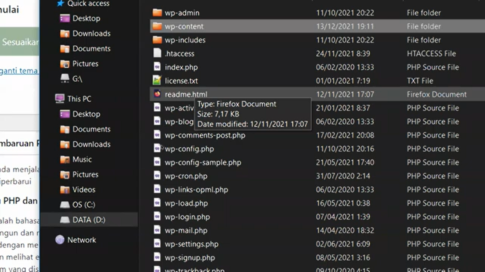
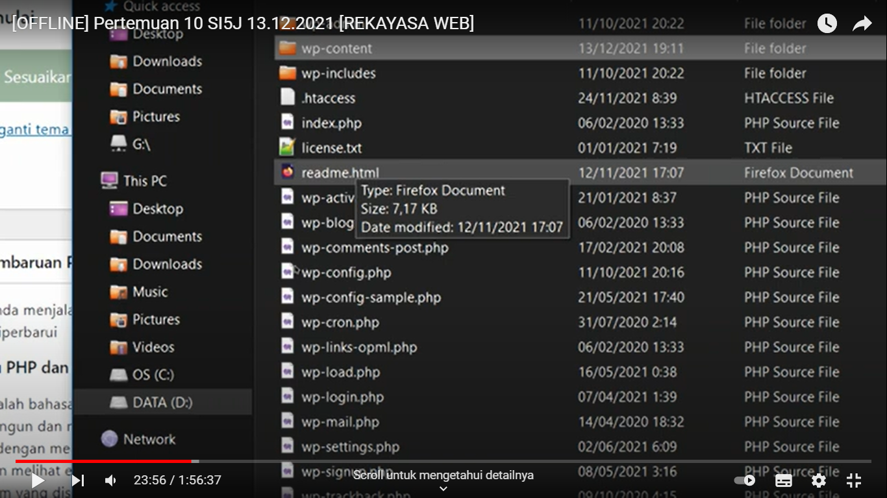
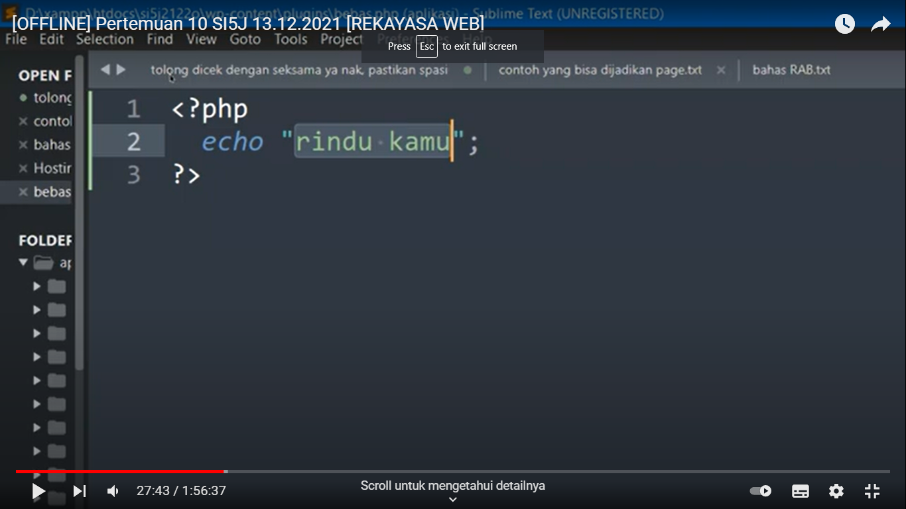
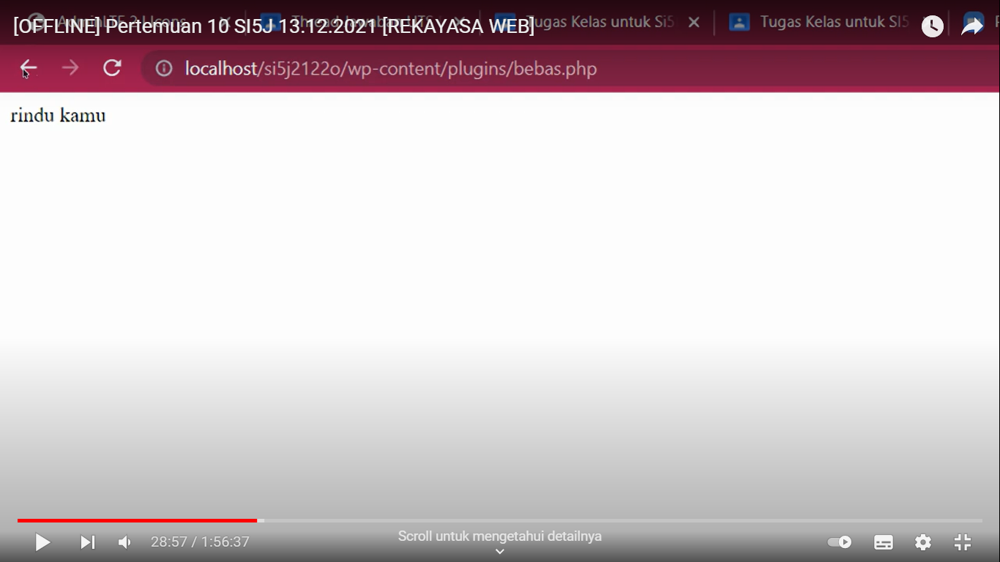
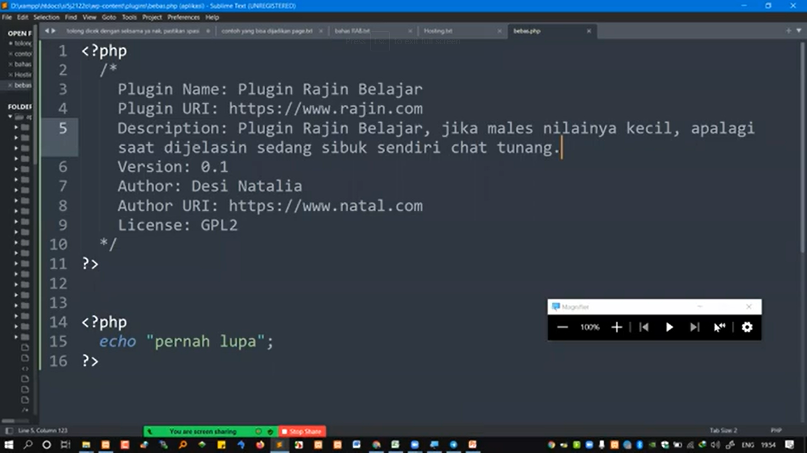
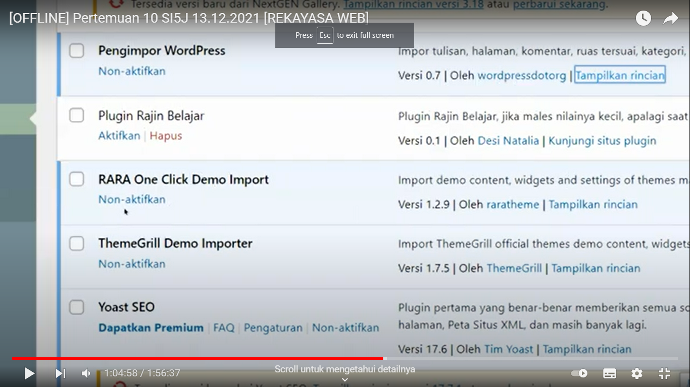
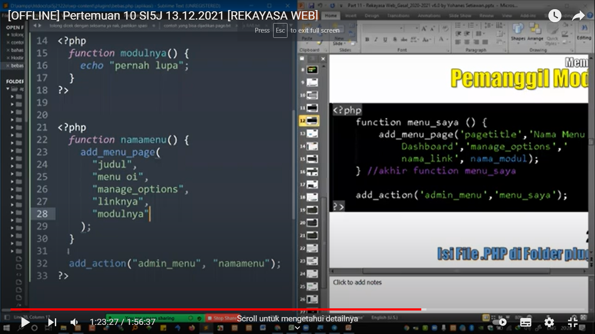
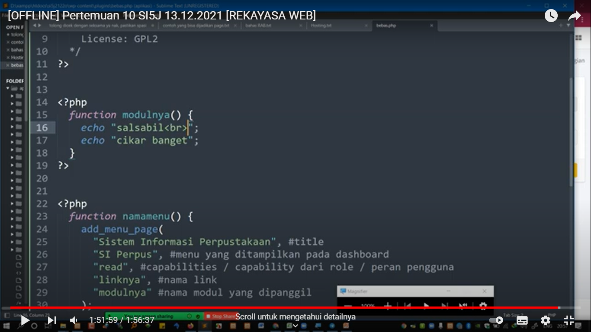

- NIM = 19222500193
- NAMA = Johan Alamsyah
- Kelompok = SI5J
kesimpulan atau hasil pertemuan 10 yang saya ambil adalah:
- Pertemuan 10
- Pertemuan 10 kita membuat plugin, buka xampp/localhot/si5j2122o/wp-content/plugin/ lalu kita buat new bebas.php
- sesudah itu kita menuju sublime text untuk mengcoding apa yang mau kita ktik
- dan akan muncul dilocalhost/si5j2122o/wp-content/plugins/bebas.php tulisan apa yang kita ktik
- Jika ingin menampilkan plugin kita diwoodpres kita ktik buka tutup php seperti ini
- dan plugin kita akan muncul di plugin terpasang tinggal kita aktifkan saja
- dan akan tampil apa yang kita ktik coding yang kita mau diplugin kita tadi
- sekian terimakasih







